Polynesia
I was a young teenager when Facebook recommended me a travel profile called "Boczne Szlaki". It was run by a guy who was hitchhiking around the world and had traveled all over South and Central America. I had been fascinated by travel since childhood, but at that time, I never would have thought I could go anywhere beyond Europe. It was this profile that made me believe in myself and realize that fulfilling dreams of visiting the most remote corners of the Earth is real and achievable - and that even I could do it.
Boczne szlakiAt that time, the author was in Polynesia, where he stayed for several months, posting vlogs about his experience. From the very first moment, I fell in love with this place. The stunning, uninhabited atolls, towering jungle-covered volcanoes, incredibly kind people, and the simplicity of life completely captivated my mind. To me, it was paradise on Earth and my ultimate travel goal. Living there became the pinnacle of my dreams. From that moment on, Polynesia took over my thoughts.
I never would have expected that I'd fulfill my biggest travel dream in just the third year of my wandering around the world. I wasn't planning it, thinking that, it was too expensive and too ambitious. For the summer of 2024, my main plan was some form of sailing adventure - I had long wanted to experience life at sea (which is also high on my dream list). It was supposed to be a solo trip since I felt that was the last thing I needed to truly call myself a proper traveler. At first, I considered joining a cargo ship, but that idea quickly fell through. After a few weeks of thinking, I remembered Workaway, a platform listing places where you can exchange help and work for accommodation and food. I started searching for boat-related opportunities. After a few days of research, I found several offers, but most were for boats docked in harbors. And then, finally - one single listing in Polynesia. No major requirements. A guy had a boat and one available spot, so he was looking for someone to sail with him. I reached out, but it was too early for a confirmation. He told me to contact him three months before my arrival. I wasn't going to wait - I bought my tickets immediately. It turned out that flights from Paris were half the price compared to those from Poland. The uncertainty of whether I'd get a spot on the boat didn't change anything. Even if it didn't work out, I'd still be in Polynesia - I'd figure something out. It was hard to believe - my biggest dream had just come true. I was flying to Polynesia.
As the departure date approached, my preparations entered more advanced stages. The trip was planned for three weeks: two in Polynesia, a one-day layover in San Francisco, and four days in France on the way back. I drafted a Plan B in case the boat option fell through, and it turned out so well that I even started considering skipping the Workaway offer. My doubts aligned perfectly with the news that my potential host wouldn't be able to take me in. So, Plan B it was. I scoured maps for the most isolated island with an airport, read about different archipelagos, and checked flight connections. Eventually, I made my choice: one week on Ahe Atoll in the Tuamotu Archipelago, followed by a week on Tahiti. My vision was simple: a hammock, a beach, and pure spontaneity. I had no idea what was waiting for me, but I didn't care - because I was going there for my dreams.
 My equipment
My equipment
Like most journeys, this one had to start at an airport. My mom drove me there, gave me a hug, and waved as I walked into the glass-fronted terminal of Kraków Balice. The first flight to Paris passed quickly. Once there, the city was still buzzing - it had only been a few weeks since the Olympics ended, and the whole place was still vibrating with energy. I had to transfer to Paris Orly Airport, so I rushed to the metro. Once there, I grabbed a quick lunch and replied to messages from friends and family. This was my first solo trip - and such a distant one - so naturally, everyone was a bit stressed. While waiting in line to board, I noticed a few Polynesian-looking passengers, and that's when it truly hit me - how close I was. The flight lasted 10 hours before we landed in San Francisco for a refueling stop. Unfortunately, we still had to go out of the plane and go through a whole set of procedures. To make things worse, I started feeling feverish. Before the trip, practically everyone around me had been sick, and it was a miracle I hadn't caught anything earlier. I popped a few pills and after a while, the fever started to ease. The second flight - another 10 hours (making it 22 hours total since I left Paris) - was spent watching Moana and catching up on sleep. Finally, at 6 AM local time, I landed in the most beautiful country I had ever seen.
FlightsAs soon as I stepped off the plane, I was greeted by smiling Polynesians playing on ukulele. I quickly passed through immigration and got to work - buying a SIM card and withdrawing some cash. Then, I hopped into a taxi to my hotel. I had a small chat with the driver - he told me that Ahe was a complete outback, but the locals were incredibly kind and would surely welcome me with open arms. Feeling optimistic, I got out of the car and checked into my hotel. After dropping off my luggage, I did some quick shopping and ordered a taxi to take me to the start of the trail leading up Mount Aorai. Turns out, the road was in such bad shape that only one taxi driver was willing to take people there - hence the steep price of $45 one way. The driver was super friendly - we got along well, and he even gave me his contact info in case I needed a ride back or any help. He also warned me to be careful, as I was heading out pretty late (by this time, the sun could already be scorching), and I might be feeling the effects of jet lag. By around 9 AM, I was at the trailhead, ready to start the hike.
Mount Aorai
The initial part of the trail led through dense jungle, with the path winding steeply upward. The thick vegetation kept the sun from fully breaking through, making for a pleasant, shaded hike. Along the way, I passed all sorts of tropical plants - avocado trees, melons, and more. After more than an hour of walking, I reached higher elevations. From that point on, I was rewarded with uninterrupted views of the ocean, the skyline of Papeete, deep valleys, and surrounding peaks. The narrow path hugged the mountainside, with a steep drop on one side. I was in awe. Under my breath, I kept thanking God for the chance to be here. The air was filled with the fresh, earthy scent of the forest. Everything was so vibrant and colorful that it was impossible not to feel overwhelmed with admiration.
Mount Aorai
At some point, I arrived at a small hut that serves as a potential overnight shelter - a key milestone on the trail. Ahead of me stood the massive summit of Mount Aorai. To reach it, I had to take a very narrow path running along the ridge, climbing steeply upwards. From here, the trail became significantly more difficult. Ropes were fixed in several sections, and careful footing was required. Thorny plants scraped my calves as I pushed forward. I kept climbing until I reached a point where I only had half a liter of water left. The sun was brutal, I was severely thirsty, running on an empty stomach, still haven't slept after a 22-hour journey and had a fever few hours ago. I didn't want to risk extreme exhaustion within the first five hours of my stay in Polynesia. At about two-thirds of the way to the top, I made the tough call to turn back. I took a few drone shots of the incredible scenery and started descending quickly. On my way down, I passed a few climbers, stopped briefly at the hut, and texted my taxi driver, asking him to pick me up and bring some water.
1) Hut with Papetee in the background 2) Trail leading down from the mountain
When he finally arrived, he was stunned. He said most hikers start this trail around 3 or 4 AM, yet I had nearly completed it after setting off at 8. He was also impressed by my pace. On the way back, he gave me a short city tour and shared his thoughts on Polynesian independence, we both agreed that the region should not be called French Polynesia, but just Polynesia.
After that adventure, I took a quick shower, relaxed, and headed to a local BBQ spot recommended by my driver - turns out BBQ is hugely popular in Polynesia. I ordered a steak and, out of curiosity, tried a small starter made from cow heart. By the evening, I returned to the hotel and took some rest before my flight to Ahe the next day. I was a bit stressed and anxious - tomorrow, I'd be stepping into the great unknown.
Journey to Ahe
On the second day, I woke up before sunrise and went to a few stores that were already open at that hour. I needed to buy a knife because I planned to wild camp for a whole week on Ahe. Unfortunately, my mission was unsuccessful. I took a taxi to the airport and waited for my flight. It was a fairly small aircraft. Inter-island flights here operate in a somewhat unusual way: on the way to Ahe, we stopped at three different islands, dropping off and picking up passengers.
When we finally landed, it was cloudy, and it looked like it might rain. However, as soon as I stepped outside, I realized it was very warm. The airport building was really just a single room, staffed by two people who only worked there when a plane arrived. There was a small bathroom and a tiny shop. Posters of the only two guesthouses on the island hung on the walls, along with warnings about dengue fever (a mosquito-borne disease). Only a couple of people landed here with me. There were also a few locals inside the building, waiting for packages delivered by the plane. After collecting my luggage, I started repacking and preparing my gear for the journey ahead. At that moment, a local man approached me and said something in French - I didn't understand a word, but I used Google Translate to tell him that I hadn't come to visit anyone and that I was traveling solo. Five minutes later, when the building had emptied, someone ran inside, saying that people were waiting for me. I grabbed my backpack and stepped outside, where the same man that was talking to me previously was waving and inviting me onto a boat. Well, I got in - I'd heard from people on the internet and in Tahiti that Polynesians are very friendly and kind, often inviting travelers to stay with them. Before I knew it, I was speeding through the middle of the atoll, heading straight for the village. After about 20 minutes, we arrived at a tiny harbor in the heart of the village and switched to a pickup truck, which took us to a house. My host turned out to be Temarii. Without exchanging a word, he offered me an entire building at the back of his property and told me I could stay there.
1) House I was living in 2) From inside of the house 3) My neighbour
I was in shock. I had barely landed, and I was already being taken under someone's roof. The best part was that Temarii didn't speak English, and I didn't speak French. I unpacked and thought that since I was already staying at Temu's place (as he told me to call him), I might as well make myself useful. So I offered to help with something. He handed me some tools, and told me that I can change a tire on his a bicycle. A little later, I took the same bike for a ride around the village. Tenukupara, as it is called, is the only settlement on the island (although many small houses are scattered along the coast). It's very small, with literally just two intersecting roads, one church and cemetery, one post office, one school, one sports field, a small port, one shop - and that's about it. The village is located about 20 - 30 minutes by boat from the airport, on the southeastern edge of the atoll. The locals live off fishing - whatever they catch, they eat, and any surplus is sold to buy ingredients they can't produce themselves. A plane arrives once a week, as does a cargo ship. Electricity comes from solar panels, and water is collected from rainfall. You could say they live in the most sustainable way possible. Life on the island is very simple: you wake up whenever you want, catch a few fish in the most beautiful water I've ever seen, and in the afternoon, you either relax, play volleyball with the whole village, or sit around the local shop chatting. Ahhh, what a beautiful life.
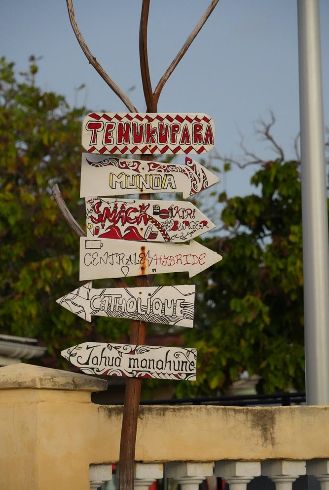 1) The bike I fixed 2) Church in the village 4) Map of Ahe
Aside from the bike ride, not much happened on the first day. I went for a walk, took a swim in the ocean, and had a meal with Temu's family (rice with fish). I mentioned the family, so who else lived there? It was Temu's family home, but his brother lived there with his wife and son. As it happened, Temarii was just visiting for a couple of weeks at that time.
National Polynesian flower
Nights on Ahe are very warm. My hut didn't even have a door to close, so I slept barely covered by my sleeping bag in the open air. The only serious problem was the mosquitoes - there were an awful lot of them. They were smaller than the ones in Europe, so you couldn't hear or feel them when they bit. At least the bites didn't itch. I was worried about them because it was impossible to avoid getting bitten, and everywhere there were warnings about dengue fever.
The next day, I woke up with the sunrise, so I quickly grabbed my camera and ran to the beach. Later, we had breakfast together: fish, rice, salad, and hardtack (since there is no bakery on the island, hardtack serves as a substitute for bread), along with a big coffee, drunk from soup bowls, with powdered milk. After the meal, I went back to my place and launched my drone to see what the island looked like from the air. Later, Temu called me, saying we were going fishing.
1, 2) Tenukupara from the sky 3) Temu's boat
First, we had to prepare the gear: we tied pieces of metal and hooks to long fishing lines, got gloves ready, packed ice for the cooler, and so on. Once we were ready, we headed out. First, we took the boat to a motu on the other side of the island (a motu is a small piece of land in the shallows surrounded by water, like a tiny island). There, using a three-pronged spear, we hunted for large land crabs. We also collected a few broken buoys that had washed ashore and searched the shallows for fish. Once we were done, we changed the boat engine oil and rewarded ourselves with fresh coconuts straight from the tree. Then, we finally set out onto the lagoon to fish. The method was simple: we baited a long fishing line with a piece of crab, let it sink all the way to the bottom, and held the line by hand to feel for any bites. When we felt a tug, we pulled up the line and put the fish in the cooler. After about 30 minutes of fishing, I had caught two fish. The next task was securing new buoys. We took the boat to the middle of the lagoon, where I was given a mask and snorkel before jumping into the water. It was an incredible feeling - my first time swimming in such deep water, with nothing visible below or around me. While I held onto the buoys, Temu dived - sometimes as deep as seven meters - to tie them to ropes marking private fishing areas. It was an amazing sight to witness. After a good few hours of work, we finally returned home.
1) Temu catching crabs 2) Shark
After we got back, Temu prepared a meal using the fish I had caught. We ate it with great appetite and then took some time to rest. In the evening, I went for another walk around the village and watched the sunset at the port. The sky on this island had an incredible color, transitioning from deep red through orange and pink to dark navy blue.
The next day started similarly - we headed out to the lagoon again. Our first task was tying more buoys to the lines marking the fishing areas. This time, Temu got me some fins, so I had a good swim. Next, we grabbed small spearguns and moved toward the shallow waters, where life was thriving - colorful fish straight out of "Finding Nemo". We even saw a shark! Unfortunately, the speargun broke, so we returned empty-handed that day. Back home, we had our usual fish-based meal and then relaxed.
Temu tying buoys
In the evening, it turned out the adventure wasn't over - Temu and his brother told me we were heading out to the open ocean for a full night of fishing. They were after what they called the "cousin of the sardine" - apparently the best bait for tuna. We set off at dusk, stopping first at their friends' place on a nearby motu. They traded a pack of fish for some gasoline and some jamaican green plant (if you know what I mean), then we continued on. As we crossed "The Pass" - the only channel where the lagoon connects to the ocean - a breathtaking sunset painted the horizon. Moments later, darkness fell so completely that I couldn't even see my own hand. We fished for about two hours using a similar method as before. At one point, Temu's brother accidentally caught a small shark, and another time, a cargo ship passed by, carrying goods to be unloaded in the port the next morning. Unfortunately, after a few hours, seasickness hit me hard. I usually have no trouble on the water, but with no horizon or fixed point to focus on, my inner ear got completely disoriented. The feeling was awful, and I wouldn't wish it on anyone. I didn't catch any more fish that night. We finally returned home around 2 AM.
The next day was all about resting. Temu and his brother spent most of it catching up on sleep after the night out at sea. I wandered around the village and did a little parkour training in the yard - instantly becoming the main attraction for the kids, who wouldn't leave me alone. In the evening, I went a bit further past the village to watch the sunset. On the way, I met Matax, one of the few locals who spoke English. He had once worked in Switzerland as a snowboarding instructor - since he was a surfer himself.
On the last day, there was a big event - tuna fishing. Together with Temu and his brother, we gathered our gear and set out into the open sea. The fishing spot was marked by three buoys, and we cast our bait and waited. We were lucky and managed to catch three big tunas. With such a good haul, we returned home, where Temu prepared the fish - turns out that raw tuna heart is considered a delicacy, although I passed on the offer. In the evening, we went to the store and bought a crate of beer (I'm not sure if it was in celebration of my departure or the fish we caught). It turned into quite a party. Temu's cousin joined us, and the four of us drank beer, trying to chat and play marbles (a very popular game throughout Polynesia). Eventually, feeling a little drunk, I went to bed.
1) Me catching tuna 2) Our haul 3) Tahitian beer
The next day, we had breakfast together, and with a heavy heart, I went to the harbour to catch a boat-taxi that would take me to the airport. I was very sad when I boarded the plane - I remember the thought that was going through my mind: "I've experienced paradise, and I will always long for it."
1) Phone booth at the airport 2) Goodbye photo
When I landed in Tahiti, I was immediately greeted with problems. Back in Kraków, I had booked a whale-watching tour, but apparently, I made a mistake. As soon as I turned the internet on, my phone buzzed with missed calls from the organizer - the tour was today. I made a few calls, and luckily, I was able to reschedule it for the second-to-last day of my stay. This little fuck-up, combined with the sadness of leaving Ahe, threw me off a bit. I wasn't sure what to do since my plan had been slightly different. I decided to take it easy, had lunch, and walked to the hostel I had booked for the night. On the way, I stopped by a few parks and a store. The hostel was really nice, but the road leading to it was a bit intimidating - maybe not the road itself, but the fact that there were a lot of stray dogs running around. At night, they got more aggressive, making the walk back in the dark feel like a fight for survival. The rest of the day passed by eating delicious fruit and relaxing in the park.
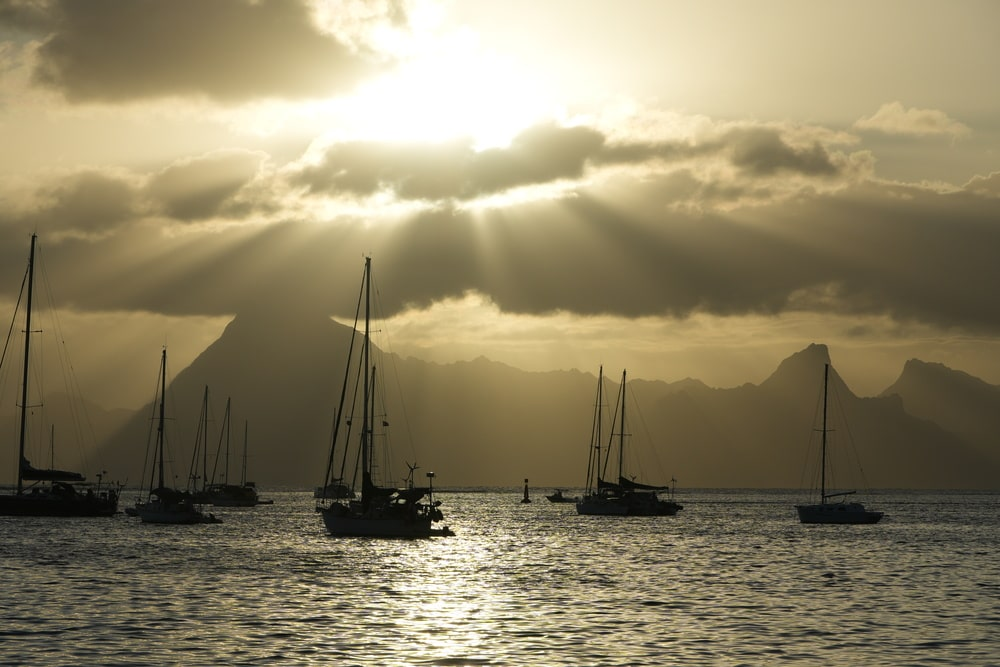 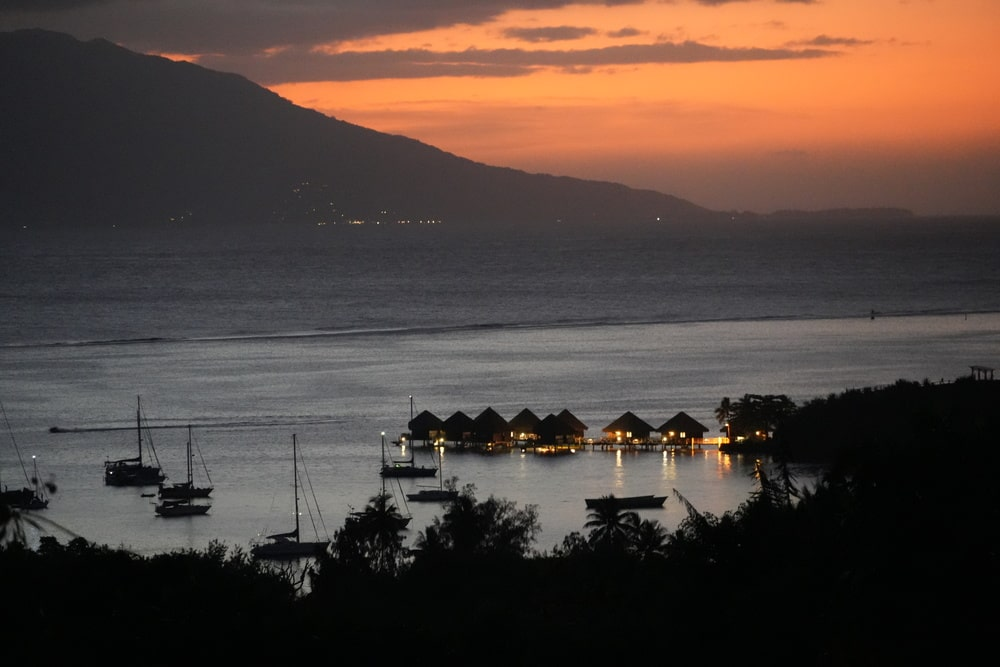 1) Photo from the park 2) Tahiti at night
Moorea
The next day, I had a solid plan: I was heading to Moorea, Tahiti's sister island. Many people had recommended it to me, saying I should spend as little time on Tahiti as possible. I left the hostel early in the morning, had breakfast, and caught a bus to the port. I managed to get on the ferry straight away. The journey took less than 30 minutes. As soon as we arrived, I set off on a hike, marking every potential wild camping spot along the way. I walked for over an hour along the island's main - and only - road that circles the entire island. Eventually, I reached the stunning Temae Beach. The color of the water there is gorgeous - I had never seen such a vibrant shade of blue in my life. I walked down to the beach and found a cosy spot under some trees to set up camp. It was only 1 PM, but I had already decided that this was where I would spend the night. Temae is a public beach, though half of its length belongs to a very exclusive hotel. I found it amusing that people were paying hundreds of dollars per night to stay there, while I could do the same just 50 meters away - for free.
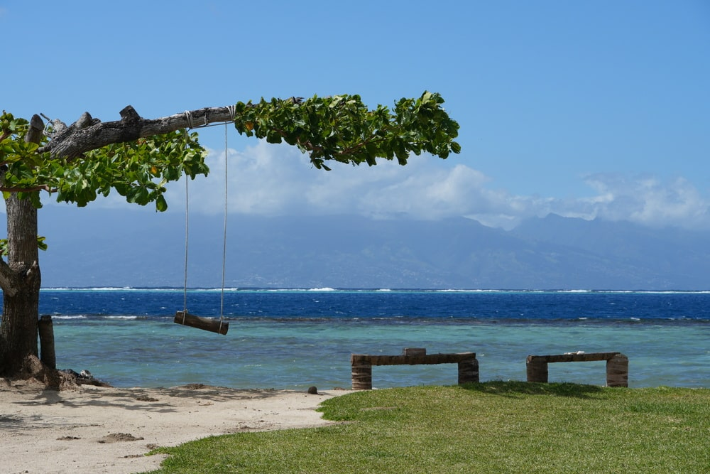 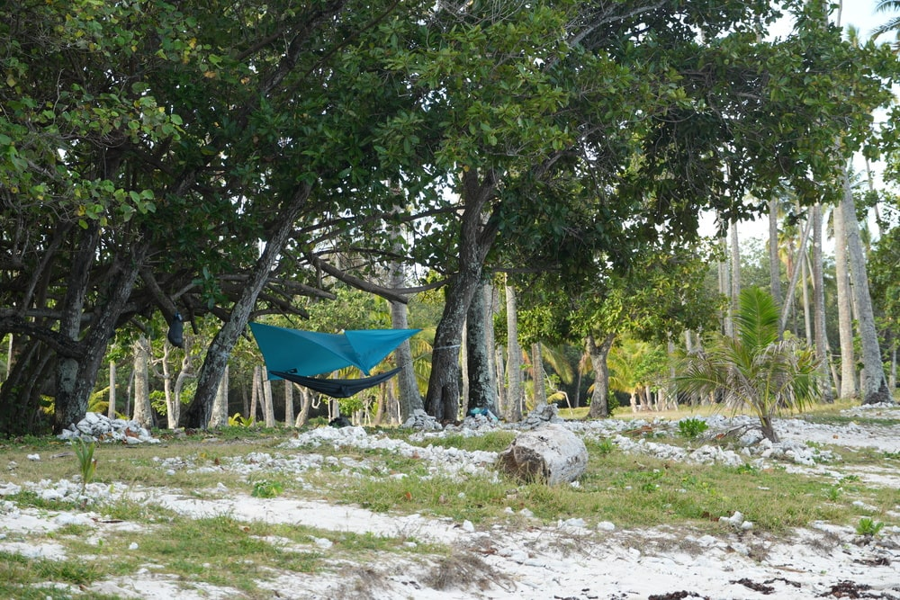 2) My camp on Temae beachIt was one of the best days of my trip. I didn't worry about anything and just did whatever I felt like. I snorkeled along the reef (since it was right by the shore), relaxed in a hammock, and walked along the sand. By 6 PM, the beach was practically empty - I had the whole place to myself. I sang and danced as the sun began to set behind the island's mountains, while Tahiti on the horizon slowly disappeared into the growing shadows. It was an incredible evening. When night fell, I got ready for sleep and secured all my valuables. I had two backpacks: a big one and a small black one. I put all my valuable belongings into the smaller backpack and hung it high up in a tree so no one could see it. The bigger backpack, which only had clothes in it, stayed under me. My passport and wallet stayed with me in the hammock.
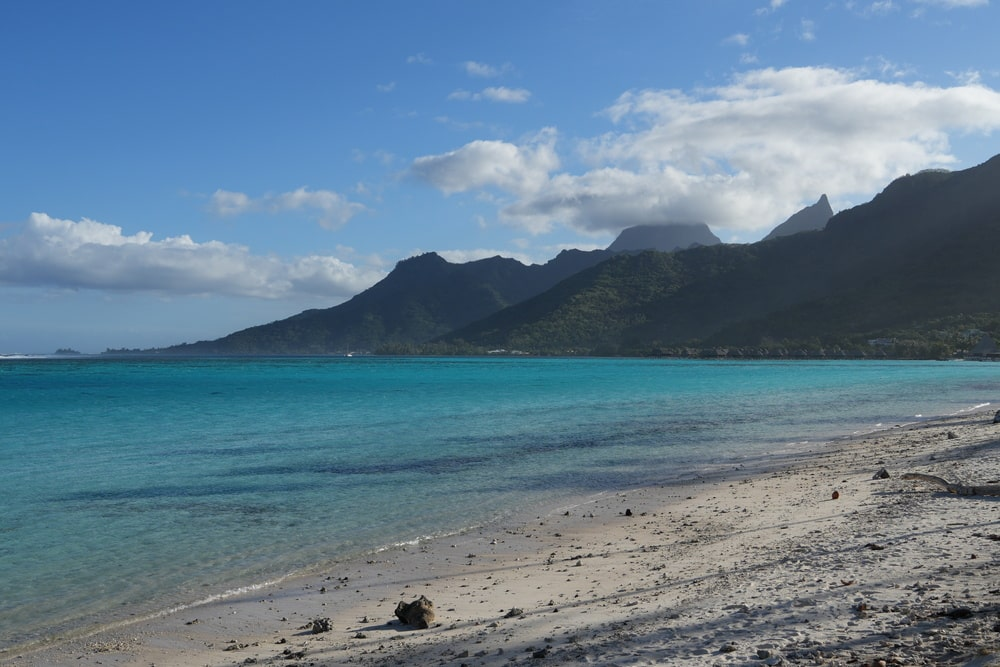 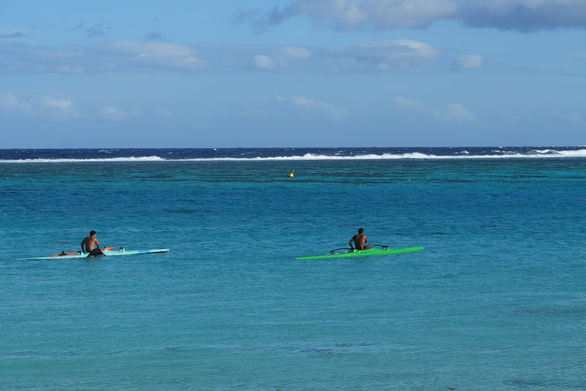 2) Polynesian national sport
The night and morning passed very peacefully. I quickly packed up all my gear and set off. I needed to get to the marina in Opunohu Bay because I had arranged a diving session there the day before. First, I walked to the airport, as it was very close to the beach. There, I charged my phone, had breakfast, and bought some food supplies. I knew I wouldn't make it to the bay on foot in time, so I wanted to check if there were any taxis at the airport. I didn't find any, so I went back to the road and started hitchhiking. A truck picked me up almost immediately and took me all the way to Cook's Bay. From there, I knew I'd definitely make it on time, but I still kept my thumb up. Quite quickly, a young French couple stopped and gave me a ride straight to Opunohu Bay. Once there, I walked around for a bit and rested in the marina while waiting for my instructor. When she arrived, I found out I was the only one signed up, so it turned into a private lesson.
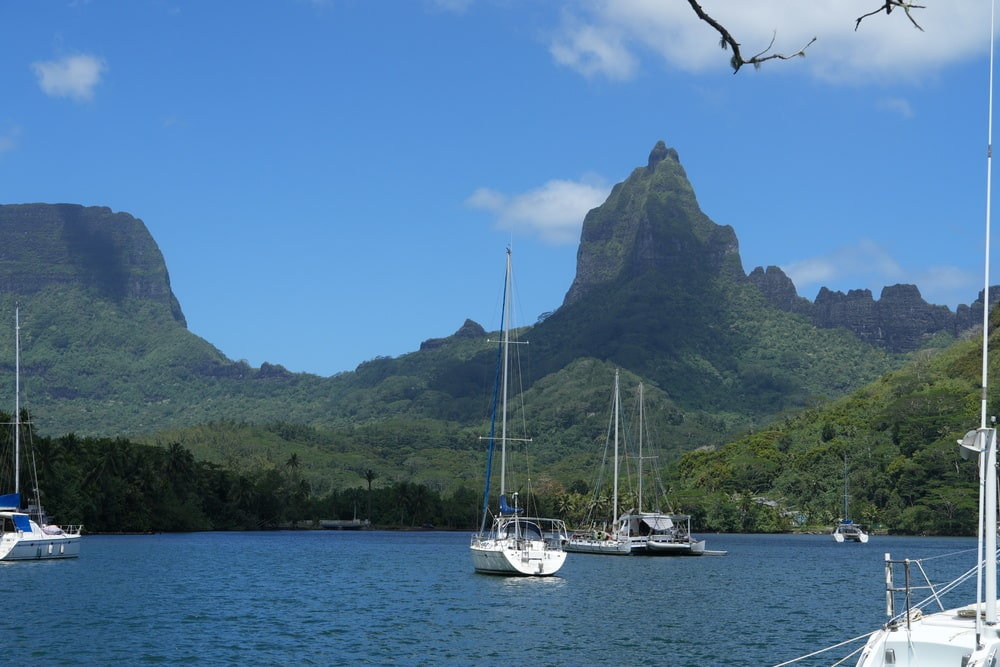 Opunohu Bay
We quickly set off towards the mouth of the bay, and after a brief explanation of what to do, I jumped into the water. Since it was my first time diving, we couldn't go too deep - only about 8 meters down - but for me, it was an out-of-this-world experience. That feeling of being underwater - it's a completely different world. Everything moves in slow motion, fish are swimming all around, my heartbeat slowed down, and above me was just the shimmering surface, hiding whatever lay beyond. It was an experience worth every penny, and I'd recommend it to everyone. I even managed to fulfill one of my dreams - seeing a sea turtle up close! We swam right by one. The dive lasted about 40 minutes, and then we returned to the marina. At that point in the day, I started wondering what to do next. Should I stay in the bay and book more activities, keep moving forward, or head back? In the end, I decided to hike through the mountain pass back to Cook's Bay and spend the night there.
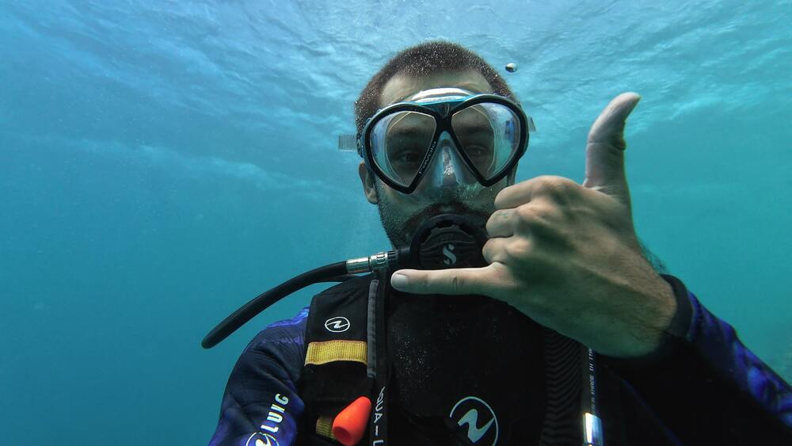 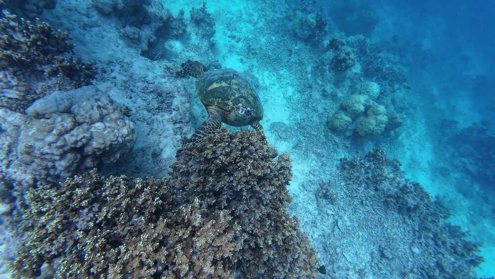 Diving on Moorea
I set off, and at first, the trail led through a valley with stunning views of the mountains and jungle. I saw a variety of beautiful animals and plants. After a short hike, I reached a hill with a breathtaking view of the valley. There was a fitness trail there - an outdoor workout path with exercise machines. I did some pull-ups and other exercises and thought it would be a perfect place to camp. Unfortunately, it was only 5 PM, and I still had 80% of the trail ahead of me, so I left the spot (which I later regretted). The trail then led deeper into the forest, passing through numerous pineapple fields - one of Moorea's specialties. The island's pineapples are considered the finest delicacy in all of Polynesia. They are sold only here because the harvests are small. These pineapples are smaller than the typical, but they are much sweeter and more flavorful. Honestly, it was the best fruit I had ever tasted. Unfortunately, you can't get them anywhere else. I continued through the forest until I reached the other side of the mountain and began descending toward Cook's Bay. I arrived just as it was getting dark. After quickly restocking supplies at a store, I set off to find a place to camp. It took me a solid two hours of walking. There were no safe spots along the road. Eventually, after much searching, I settled on a tiny three-square-meter beach right by the roadside. It was lower than the road, so I thought no one would see me. This turned out to be one of the worst camping spots of my life. The constant noise of passing cars and the glare of headlights made it hard to sleep. To make matters worse, it started raining around midnight, forcing me to set up my tarp in the dark. Throughout the night, several cars stopped near my spot - either for a bathroom break or for reasons unknown - keeping me on high alert. Luckily, no one bothered me, but I barely got any sleep. At sunrise, I packed up quickly and started making my way back.
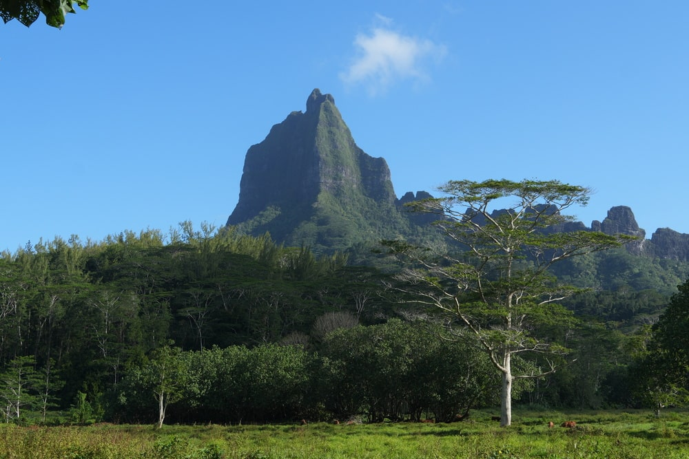
 Hike through Moorea's mountains
Hike through Moorea's mountains
I quickly caught a ride from a kind lady who had also been a traveler like me in the past. We had a really nice conversation. She dropped me off right at the ferry terminal, and by 9 AM, I was already sailing back to Tahiti. Looking back, I somewhat regret leaving the island so soon. I had one of the best days of my trip there, but due to other plans and a bit of exhaustion from the rough night, I decided to return. And just like that, I found myself back on Tahiti early in the morning.
Tahiti Iti
I wanted to get to Tahiti Iti (Tahiti is actually two islands connected by a tiny piece of land: Tahiti Nui and Tahiti Iti) because it is the wildest part of the island. The roads reach about halfway along the coastline, but beyond that, there's just jungle and you have to take a boat to go further. The south is also home to the village of Teahupo'o, where surfing was born. It has the most famous wave in the world, and just a month ago, the Olympic Games for this sport took place there. I found out that the next bus was in two hours, so I went souvenir shopping - I bought a bunch of magnets, figurines, and my dream necklace with a hook (just like the one that Maui had in Moana).
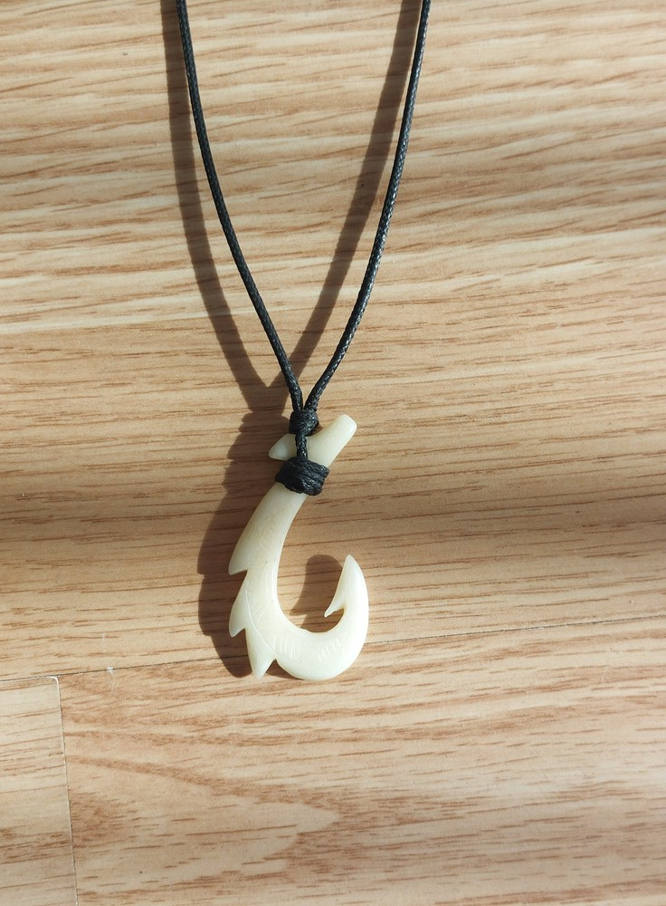 The hook neclace I bought
I arrived in Teahupo'o in the afternoon and went straight to my hostel. It turned out to be a perfect choice - it had a terrace opening directly onto the beach, with a perfect view of the wave. The host was very kind; he had baked a cake, breakfast was included, and there was no one else in the dorms. The only other guest was a woman from France staying in a private room, we chatted a bit. She was just as amazed by Polynesia as I was. I went for a quick lunch and then returned to the hostel because the host mentioned that a kayak was available. I quickly got ready and paddled out towards the wave. I reached the edge of the shallow reef and just drifted there, sometimes surrounded by sharks. Near the wave, there was a platform built for filming the Olympics - I climbed onto it, and the view was breathtaking. I waited there for the sunset, then paddled back, returned to the hostel, and went to sleep.
 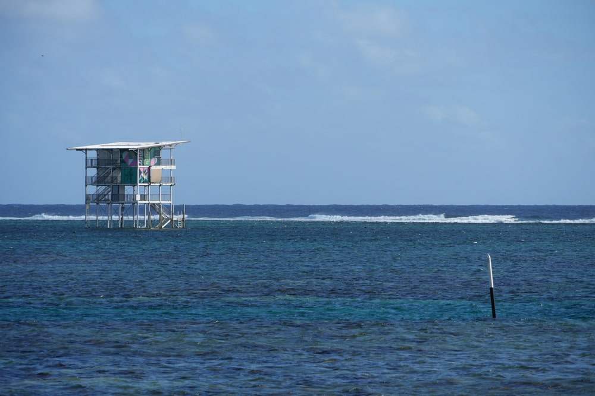
2) Olympics platform
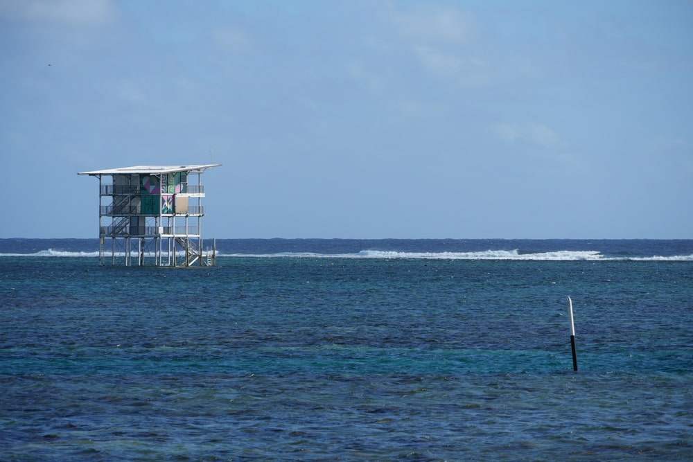
2) Olympics platform
The next morning, I wanted to explore the river that flows into the ocean at Teahupo'o. It carves beautifully through the forested mountains of Tahiti Iti, and my roommate had told me that it was possible to walk upstream for at least an hour. Unfortunately, it was raining that day, and the river was too high, making it impossible to walk for more than ten minutes. Disappointed, I returned to the hostel and started thinking about my next move. I decided that wandering around the island in the rain wouldn't be much fun, so I chose to stay another night since the accommodation was excellent. I grabbed the kayak and spent the whole day out at sea. I paddled along the coastline for quite a distance before finally reaching a shore. Barefoot, I explored the jungle in the rain just like Jack Sparrow - I felt incredible. Kayaking on the deep ocean in heavy rain is an amazing experience. By evening, I returned for dinner and relaxed on the terrace, enjoying some fresh fruit. Later that night, I headed to the beach to watch sharks hunting nearby.
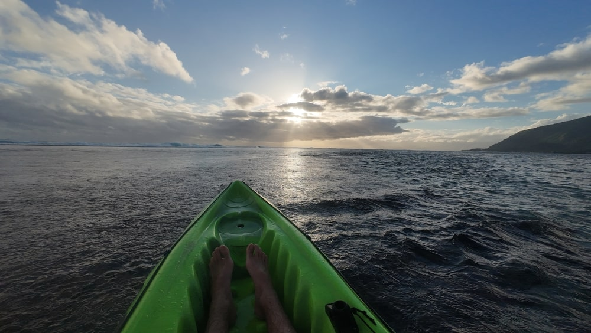 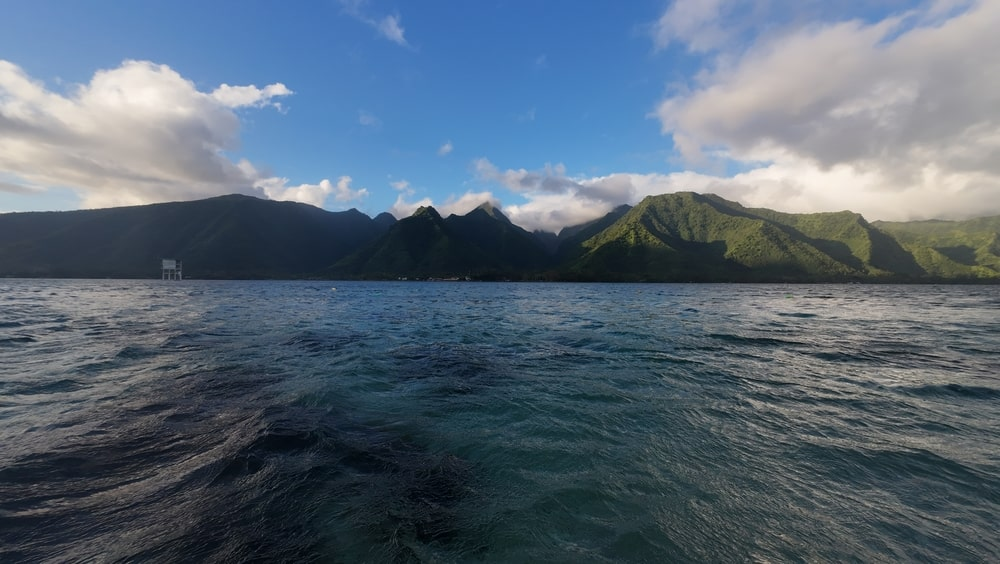 Kayaking on Tahiti Iti
Tahiti Nui
The next day, I knew I had to head back to the city because my whale-watching tour was approaching. But first, I had to give the river another shot. The water level had lowered, but the bugs were unbearable. I managed to go about 40 minutes upstream before it started raining. I didn't want to risk the water level raising, so I turned back. I went to the bus stop and started my journey back. I got off somewhere around the middle of the northern coast, planning to go surfing. Google Maps showed a surf rental shop nearby. Unfortunately, after quite a ride, I found nothing but a parking lot - no surfboards in sight. Not sure what to do, I decided to go with the flow and started walking. I soon reached a nice beach and sat there for a while. After a bit, I started messaging various rental places to check if there was any chance of renting a board, but most didn't reply. Left with nothing in a desolate place, I decided not to waste time and had a little parkour session on the beach. After a while, I chilled for a bit and then headed to catch the bus. I eventually arrived in the city, and after a short walk and transfer, I reached the hostel.
 Mountains in Teahupoo
Mountains in Teahupoo
The next day was whale day, the rescheduled trip I had been waiting for. I left a bit earlier to stop by Decathlon on the way and buy a travel bag to use as additional checked luggage. Afterward, I grabbed a coffee at McDonald's and did some shopping. When the time came, I headed to the marina to the spot where the boat was waiting. We set sail in search of humpbacks. Once the guides used echolocation to locate one, we approached it to a safe distance and jumped into the water. We formed a group and swam toward the creature. We couldn't see it at first, and then suddenly, an enormous whale surfaced right beneath us. It was only when it got really close that it changed direction and passed us. I thought to myself, "How huge is this creature?" But then I realized it was a baby, and the mother appeared. She was enormous and beautiful. It was hard to comprehend her true size. She swam very close to us a few times, performed some pirouettes, and then swam deeper into the ocean. We got back on the boat and continued watching for these magnificent creatures. We managed to spot a few more from the boat, and after three hours, we returned to the port. I was tired, so I had lunch there (lucky me, it was happy hour!) and then headed back to the hostel to rest. I found out there was a festival happening in a nearby park, so I went to check it out, but the tickets were quite expensive, so I decided to skip it.
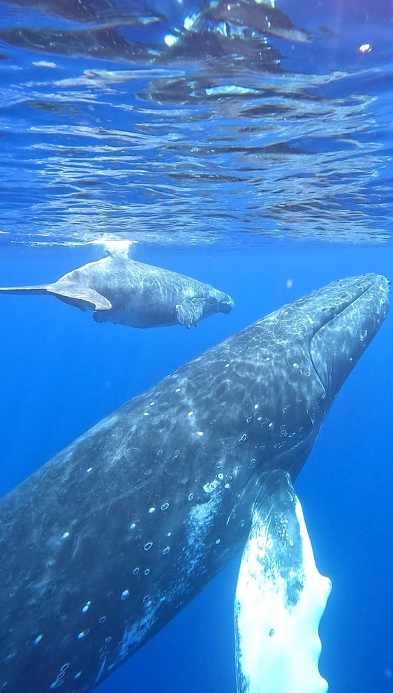 Humbacks
My last day in Polynesia, I had no plans except for the tattoo, which was supposed to be at 10 AM, but in the morning I got a message asking if we could move it to 12. Out of boredom, I went to the park to pass the time. At 11:30, I got another message saying it was moved to 3 PM. I had nothing to do, so I wandered from park to park, swam in the sea, and jumped around for a bit. Unfortunately, the heat was unbearable, so I ended up hiding at the airport (the tattoo studio was nearby). Finally, 3 PM came, and the tattoo artist arrived, looking exactly like Maui from Moana. He asked me what I wanted to capture in my tattoo. After a few preparations, he started sketching the design with a red pen on my shoulder. I couldn't really understand what was on the sketch, but I trusted him - we went ahead with the tattooing. I'm fairly experienced with tattoos, but this session was one of the hardest. It took an unbelievably long time, probably about 6 hours in total. I spent the entire time on an empty stomach. We finished at 11 PM, but it was worth it - the result was amazing, and it's my favorite tattoo ever. After the session, the guy took me to his restaurant and gave me a dinner, then drove me back to the hostel (which I was really happy about because I wouldn't have been able to go back this road in the dark with the dogs). The best souvenir I could ever imagine, though a bit expensive (2700 PLN).
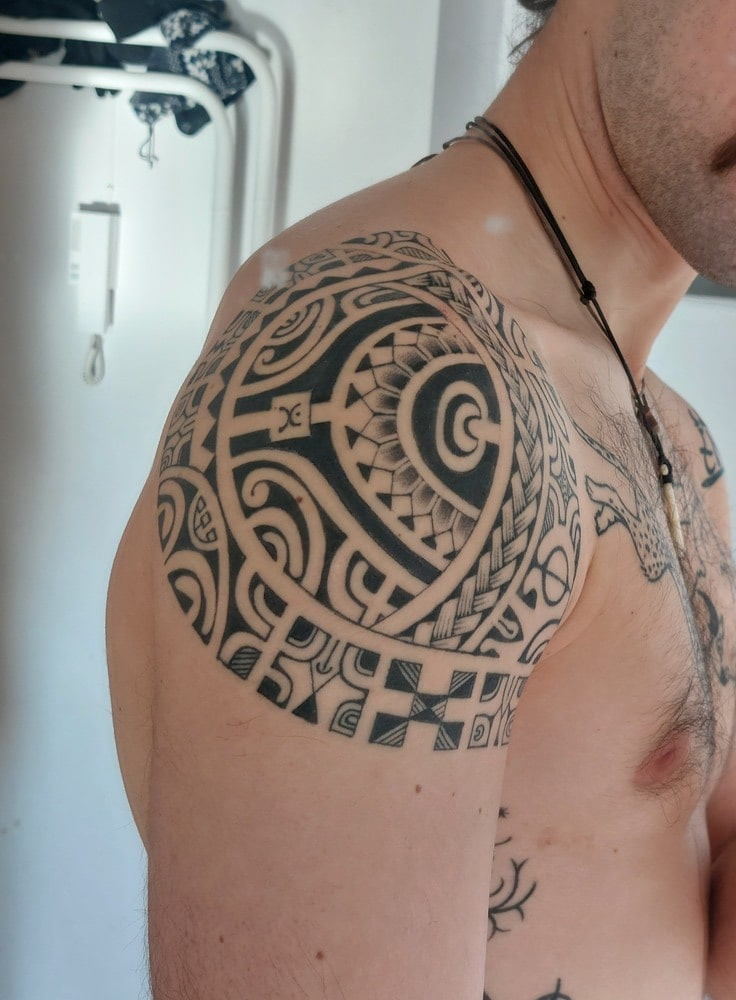 Tattoo I got
At night, the lady from the hostel drove me to the airport. I had a rather unusual experience there - my boarding pass had 'SSSS' on it, which meant I was selected for a random additional security check. They checked me about four extra times, but at least I got to skip the lines. We took off at dawn, so I could admire the beautiful mountain slopes of Tahiti and Moorea from the plane window. I wasn't sad because I knew another adventure was waiting for me - I was flying to San Francisco. We landed in the evening, and I quickly left the airport and headed to the city center to the hotel I had booked for the night. I had 22 hours in the city (from 6 PM to 4 PM). I got off in the financial district and walked around for a bit (it was my first time in the U.S.). I stopped by McDonald's to try the local cuisine xd. After that, I went straight to the hotel to get some sleep.
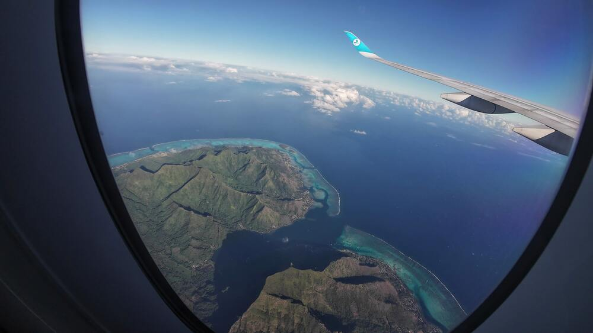 Opunohu Bay, Moorea from the plane
I woke up at dawn and immediately had a major screw-up. After returning to France, I was supposed to spend a day in Paris with my friend Mateusz and then travel around northwestern France. When I woke up, I realized I had mixed up the dates - that one day in Paris wasn't supposed to be tomorrow, as I had thought, but today, and I was still in San Francisco. In France, it was already 4 PM, and everyone was stressing out about why I hadn't landed yet. Luckily, there were no major negative consequences: I lost my ticket to the Eiffel Tower and didn't get to visit Paris, but we still managed to explore Normandy and Brittany (this story is covered in a separate journey). Once we sorted out the issue, I left the hotel. To save money on taxis, I decided to wake up super early and walk for three hours to the Golden Gate Bridge. And that's exactly what I did. On the way, I explored a bit of the city, had breakfast, and bought some souvenirs. Eventually, I reached the famous bridge, but my plan was to walk across it entirely and reach the viewpoint on the other side. It was a long walk, but the stunning views of the city made it worthwhile. When I finally arrived, the view was incredible - I snapped a few photos and then caught a taxi to the airport. From there, I boarded my flight and headed to France, where Mateusz was waiting for me. The rest of the journey is described in a separate travel story. North-West France Trip
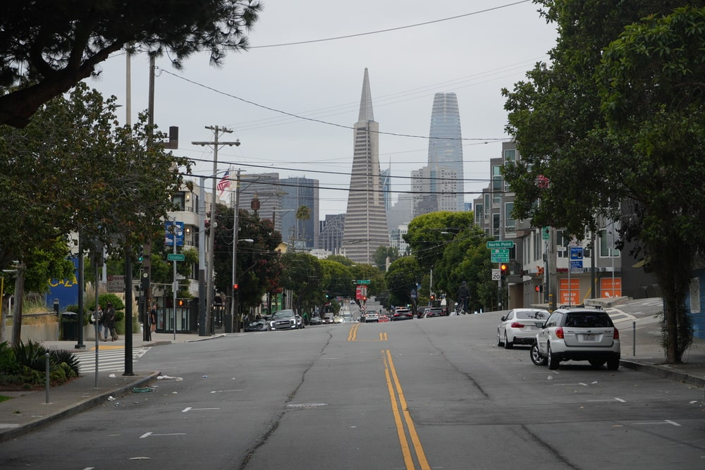 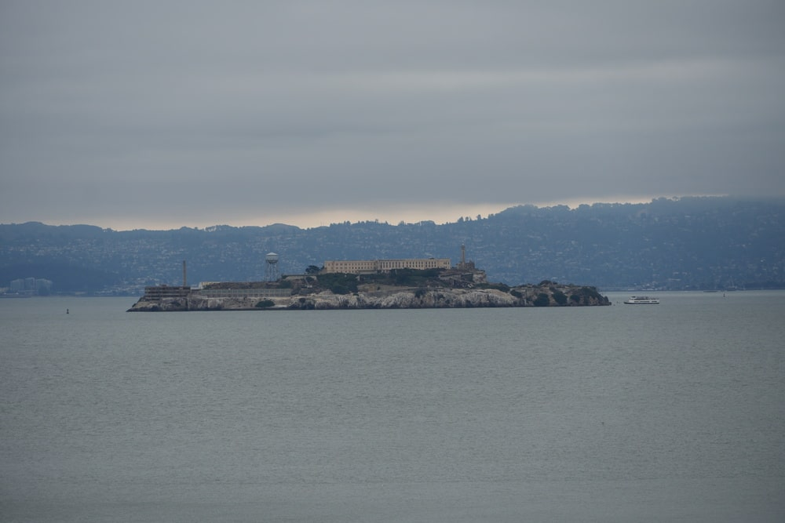 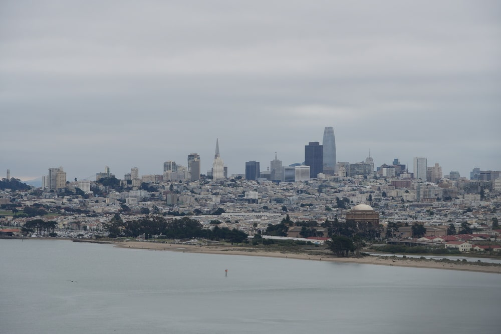 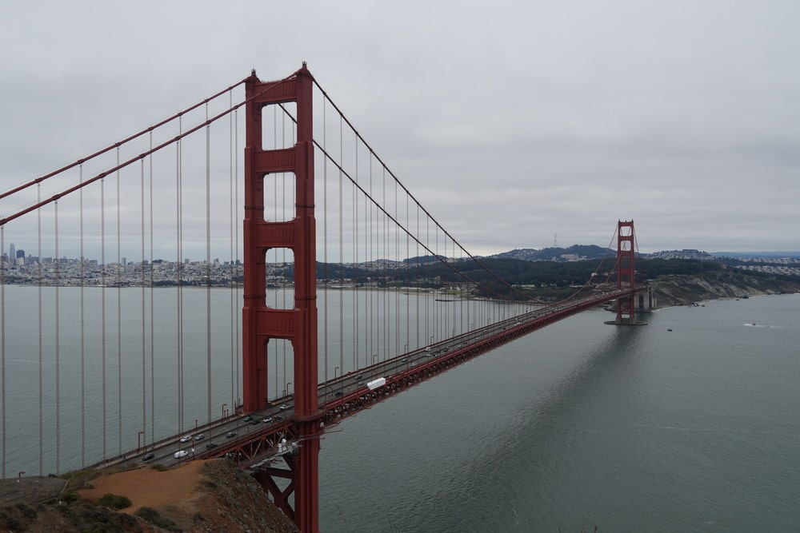 2) Alcatraz 4) Golden Gate Bridge
Summary
This was the greatest and most important journey of my life. I fulfilled my biggest dream. Before getting there, my vision of Polynesia was highly idealized, yet this wonderful country still exceeded my expectations. I will never forget those moments - the kindness and hospitality of Temu on Ahe, the stunning mountains and the endless blue ocean, the white sandy beaches, and the incredible marine life. This trip will always have a special place in my heart, and in a way, I will always carry a part of Polynesia with me (not only because of my tattoo :P). I met so many amazing people who helped me along the way, and I will always think of them fondly. This was also my first solo trip, and I believe I handled it quite well. I never felt like I had any real issues, and I enjoyed the freedom. I think I'll definitely do it again someday. I still keep in touch with Temu, and we call each other on WhatsApp. I am sure I will visit him again one day - maybe even on my own boat… I also plan to start learning French or Tahitian to communicate better with the locals. I want to dive deeper into this country and truly get to know it inside and out.
This was Polynesia - forever in my heart
Peace, Jakub
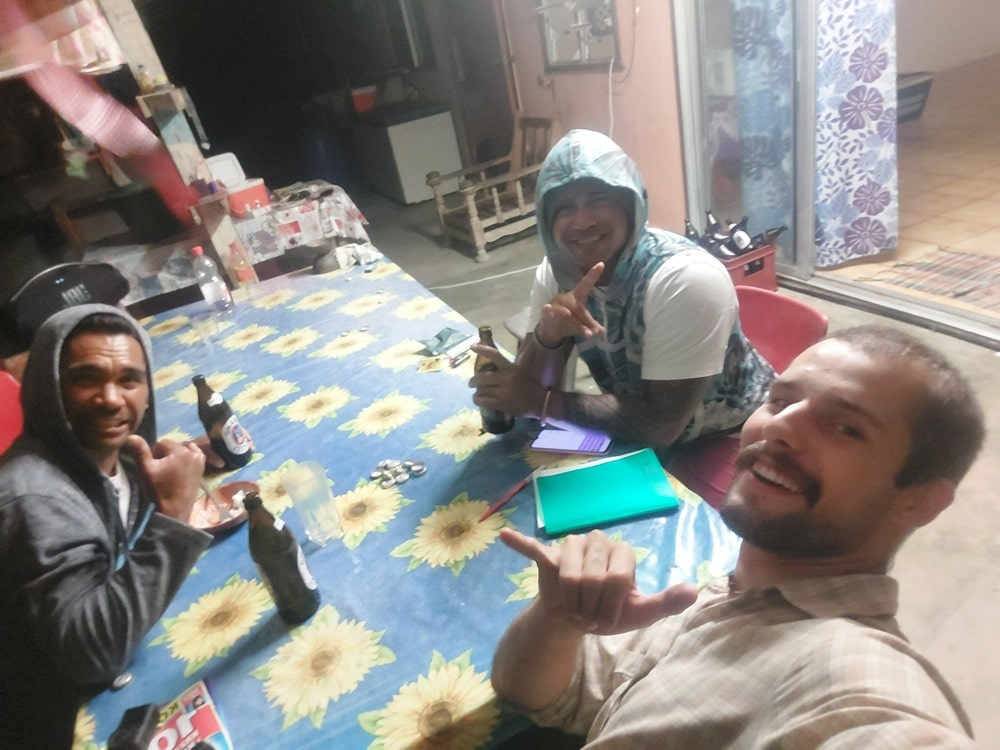